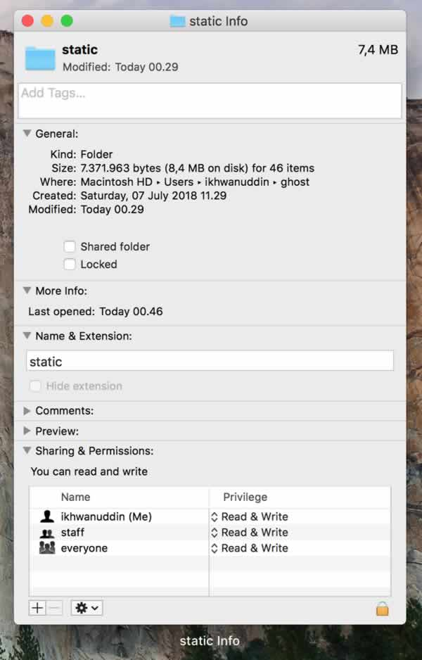

Halo semuanya!
Tulisan ini mengawali wajah baru blog saya yang beralamatkan di ikhwanudd.in. Sebelumnya saya blogging di ikhwanuddin.com lalu masih ada rizqi dan pas ada momentum, jadi sekalian nambah web domain berbasis India (.in) menjadi ikhwanudd.in, makin ringkas dan unik.

Platform yang sedang kalian saksikan ini adalah wadah menulis gratis dan open source bernama Ghost. Sudah lama Ghost menjadi alternatif dan saingan WordPress, lihat aja fiturnya gila [1].
Domain ikhwanudd.in saya dapatkan dengan murah hanya sekitar Rp119.456/tahun (dibeli dengan dollar dan sekarang lagi naik-naiknya, hiks). Saat ini rata-rata harga domain .com mulai Rp120.000/tahun. Betul Ghost ini gratis tapi ia mensyaratkan Node.js untuk memproses kode di sisi server. Server yang melayani Node.js memerlukan prosesor dan memori RAM. Harga paling murah yang saya tahu ada di domainesia.com mulai Rp396.000/tahun.
Apabila dijumlahkan maka biaya running blog berbasis Ghost adalah sekitar Rp515.456/tahun atau Rp42.955/bulan. Kalau dibayar sekaligus terasa mahal, tapi kalau dibayar perbulan mungkin terasa ringan seperti ongkos ngopi dan rokok. Sungguh eman-eman kalau untuk rokok, merusak tubuh bayar.
Cari akal dan riset sana-sini ternyata GitHub Pages menawarkan trik sebagai penyimpanan file Ghost. Alurnya harus begini agar trik itu berhasil [2] [3]:
- Beli domain dengan nama sesuai selera (saya beli domain India di BigRock), semisal domainbe.li
- Buat akun GitHub gratis dan cepat
- Kamu akan punya alamat dengan format username.github.io
- Hubungkan domain yang baru dibeli dengan akun GitHub, sehingga username.github.io akan berubah menjadi domainbe.li
- Instal node, npm, python, pip, dan buster di komputer lokal melalui perintah terminal
- Instal dan jalankan Ghost di komputer lokal melalui terminal
- Isi konten dan modifikasi desain blog di localhost:2368 (komputer lokal)
- Jika sudah siap clone project di GitHub ke sebuah folder di komputer lokal
- Generate static files menggunakan buster, static files akan masuk ke dalam folder clone GitHub
- Deploy untuk commit atau menimpa atau mengunggah static files ke repositori di server GitHub
- Blog kamu dengan alamat domainbe.li sudah bisa diakses
Sebenarnya GitHub tidak memiliki Node.js untuk menjalankan kode di sisi server. Jadi yang menjalankan adalah komputer milik sendiri. Lalu dengan bantuan aplikasi bernama buster, berkas yang berkaitan dengan Node.js diubah menjadi html dan js biasa. Untuk versi blog saya ini bisa kamu periksa di sini berkas statiknya:
Alurnya:
Build Ghost (local) > Generate Static (local) > Commit to GitHub (internet)
Lha kalau mau nambah tulisan gimana? Tetep ikuti alur di atas, buat di komputer pribadi, generate, lalu terakhir commit ke GitHub.
Tahukah kamu berapa ukuran static file GitHub ini dengan satu tulisan seperti ini?

Saat tulisan ini dibuat (sudah ada 2 artikel dan 1 halaman) yaitu hanya sekitar 7.4 MB. Gambar di atas ini berukuran 34 KB (sudah saya compress), lalu logo </>ikhwanuddin berukuran 11 KB. Dibandingkan WordPress, kalau tidak salah ingat sekali instal belum ada postingan apa-apa sudah memakan 25 - 60 MB. Ditambah plugin-plugin bisa mencapai 90 MB.
Maksud saya begini, baru unggah satu tulisan saja ini sudah sangat ringan tidak membebani server dengan file yang tidak perlu. Kalau tekun kamu bisa simpan semua media gambar di luar repositori GitHub. Karena GitHub gratis ya saat ini saya males. Server lama saya di ikhwanuddin.com hanya berkapasitas 100 MB, karena itu CPanel sering memberi peringatan dengan warna merah kalau ruang penyimpanan sudah digunakan lebih dari 90 MB.
Jika biaya untuk running blog Ghost terdiri dari domain + hosting, maka dengan GitHub saya sudah tidak perlu lagi bayar hosting tahunan. Cukup membayar domain Rp119.456/tahun atau Rp9.955/bulan. Orang yang ngerokok aja biaya bulanannya saya yakin lebih besar dari ini.